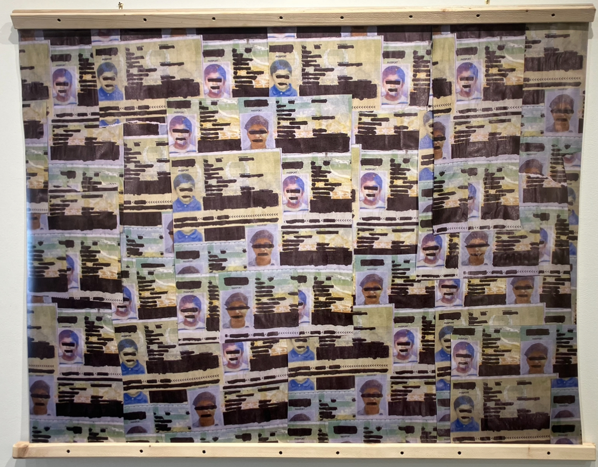

Rahim Hamid
A Collection of Politically Relevant Happy Little Accidents
homehomehomehomehomehomehomehomehomehomehomehomehomehomehomehomehomehomehomehome

In Signs of Decay

I Can't Get Off The Chair

Grieving For Pigeons

I Look For New Homes

Migrant Requiem (Postmortem)

A Perfect Society

Giving Him Another One To Be Safe

Mera Dimaagh Jhoomta Hai Du'aa Kartay Huay

Paperwork Fence I

Shrinkingly Finite Paths
×